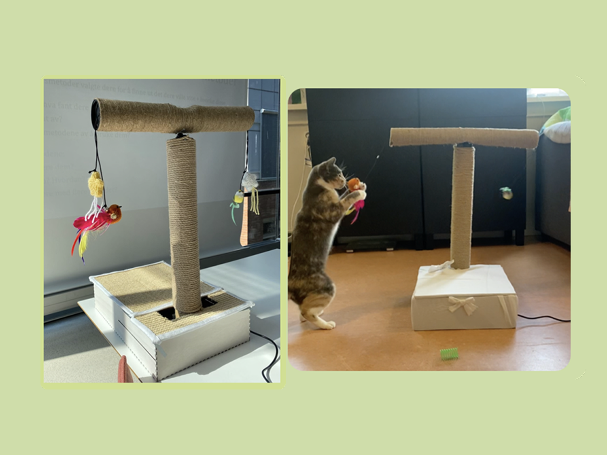

Mine prosjekter

Et spørsmålsspill som utfordrer din evne til å fokusere og samle nok poeng til å redde jungelen fra det onde monsteret Fanous. Vil du hjelpe Rex med å bringe lyset tilbake til Jungelen?

(Meteorologisk Institutt) 2025
SunSaver er en Android-applikasjon utviklet i tverrfaglig teamarbeid som en del av emnet IN2000. Målet var å gi brukere innsikt i lønnsomheten ved å installere solcellepaneler på egen eiendom.

Et spennende prosjekt der en gruppe katteentusiaster utforsket potensialet til Arduino, og hvordan vi kan bruke og forme verktøyet for livlige katteeiere som ønsker å skape et sterkere bånd med sin pus.

FriendVerse er en app som gjør det mulig for venner på nettet å kommunisere med hverandre, uavhengig av språk.